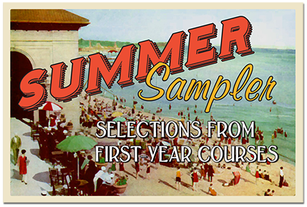

Welcome, fellow readers!
Whether you are an incoming freshman at UC Berkeley, a member of the Cal community, or an avid reader who chanced upon this page, we’re glad you’ve found your way to the archive for the annual UC Berkeley Summer Reading List for Freshmen.
For three decades now, we’ve asked folks here on campus to give us their best reading recommendations focused on a particular theme each year, and then we’ve passed that list on to the incoming undergraduate class as an early welcome to the intellectual life of the university. Nothing is required here of you incoming freshmen; these are simply lists of great reads to share and return to as the spirit moves you.
The lists—much like the UC Berkeley community—are eclectic and interesting. We hope you’ll find one, or many, readings that appeal to you.

The First Thing Freshmen Will Read
Well, not really. However, as an incoming Cal freshman, you may be wondering what’s in store for you when classes start in the fall. We’ve got a little preview here, and a welcome to Cal, with the 2015 edition of the UC Berkeley Summer Reading List for Freshmen.
Is this required reading? Absolutely not. Do we hope you’ll find something on this list that appeals to you? Absolutely yes. This year’s list—“Summer Sampler: Selections from First-Year Courses”—offers a potluck of great suggestions from a few of our many faculty who teach courses taken by freshmen. If you don’t get to one of these readings this summer, you’ll be able to find them at one of Cal’s many libraries when you arrive.
For a look at the many engaging suggestions on previous years’ lists, we encourage you to visit the Reading List archive. And, of course, we encourage you to read: avidly, widely, and wildly.
Welcome to Berkeley!
Tim Dilworth
First Year Coordinator
UC Berkeley Library
Michael Larkin
Lecturer
College Writing Programs
#UCBSummerReading
Freedom's Orator: Mario Savio and the Radical Legacy of the 1960s
Robert Cohen
New York: Oxford University Press, 2009
Subversives: The FBI's War on Student Radicals, and Reagan's Rise to Power
Seth Rosenfeld
New york: Farrar, Straus and Giroux, 2012

Intimate Politics: How I Grew Up Red, Fought for Free Speech, and Became a Feminist Rebel
Bettina Aptheker
Emeryville: Seal Press, 2006
Subversives: The FBI's War on Student Radicals, and Reagan's Rise to Power
Seth Rosenfeld
New york: Farrar, Straus and Giroux, 2012
Freedom's Orator: Mario Savio and the Radical Legacy of the 1960s
Robert Cohen
New York: Oxford University Press, 2009
Subversives: The FBI's War on Student Radicals, and Reagan's Rise to Power
Seth Rosenfeld
New york: Farrar, Straus and Giroux, 2012
- 2014: Speak Freely. Read Freely
- 2013: What Would Seniors Read?
- 2012: Revolutions
- 2011: Social Media
- 2010: Education Matters
- 2009: Best Books About Science
- 2008: Bio-Graphy: Writing a Life
- 2007: Survival
- 2006: Books for Future Presidents
- 2005: Great Discoveries, Voyages, and Adventures!
- 2004: Now That's Funny
- 2003: War & Peace
- 2002: Banned Books
- 2001: Favorite Book When I Was 18
- 2000: Great Books Written by Berkeley Faculty
- 1999: Selected by faculty involved in residence hall activities
- 1997: Selected by Freshman & Sophomore Seminar students
- 1995: Selected by faculty and staff who teach freshman seminars
- 1991: Selected by American Cultures' Fellows and staff
- 1990: Selected by Berkeley librarians
- 1989: Selected by the chairs of various departments
- 1988: Selected by faculty who teach introductory courses
- 1985: Selected by Distinguished Teaching Award recipients